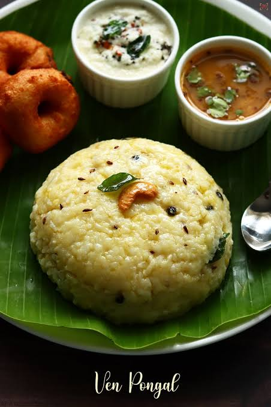

Ven Pongal

Ingredients (✴️The players 😎)
- Pacha arisi - 300 grams
- Moong dal - 200 grams
- Water - 4-5 cups
- .Ghee - a teaspoon + 3 teaspoon
- Cumin seeds - two teaspoons
- Peppercorns - 2 teaspoons
- Ginger - 20grams
- Green chilli - 2 nos
- Cashew nuts - 10 nos
- Salt
(Note : This recipe is passed down directly from the
private collection of a certified culinary artist )
Recipe
✴️ The game play 🤤
- To make this flowy, rich pongal , take a pressure cooker put 300 grams of rice and 100 grams of moong dal wash it for three times , now 4 to 5 cups of water and teaspoon of fresh ghee to enhance the flavour of ghee .
- Cook it with three whistles and rest it for 10 minutes so it gets cooked well .
- Now take the lid off and add salt and mix it well make sure ur pongal is flowy or pour hot water , take another pan for the rest of the ghee into the pan and add peppercorns, wait till it jumps over the pan in the heat.
- Add cumin seeds , finally chopped ginger and green chillies now add cashews cook all these till the cashews become slightly brown.
- Add these spices to the Pongal and give it a nice mix to make sure the cashew and the peppercorns are spread all over our pongal and our rich aromatic pongal is ready to sever hot.✨